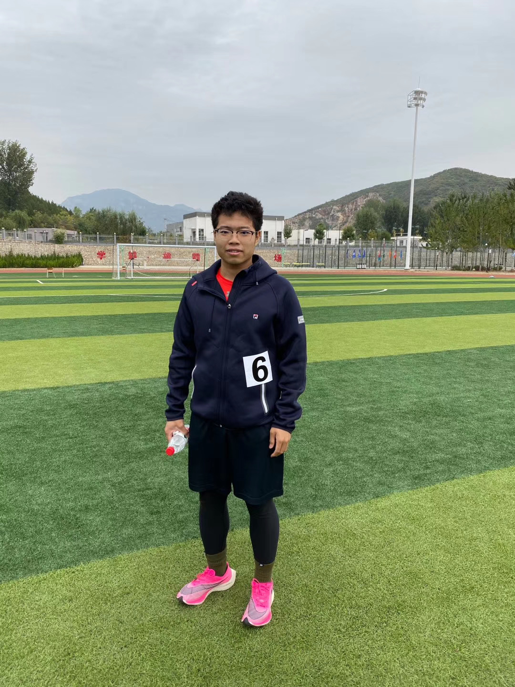

|
Pengcheng Xie
|
 |
PhD candidate,
LSEC, AMSS,
Phone: +86 13203866776
E-mail: xpc@lsec.cc.ac.cn
Address: AMSS CAS 55 Zhongguancun East Road, Haidian District, Beijing
|
About me
I am currently a Ph.D Candidate of Computing Mathematics at the Chinese Academy of Sciences and research affiliate at the LSEC. Supervisor: Prof. Ya-xiang Yuan (Homepage).
Research
My research interests include
Recent Publications
Pengcheng Xie, Molei Tao, "Parametric Resonant Control of Macroscopic Behaviors of Multiple Oscillators", 2019 American Control Conference (ACC), Philadelphia, PA, USA, 2019, pp. 1898-1905, doi: 10.23919/ACC.2019.8814709.]
Nian-wen Si, Heng-jun Wang, Wei Li, Yi-dong Shan, and Pengcheng Xie "Chinese Part-of-speech Tagging Model Using Attention-based LSTM"(in Chinese), Computer Science, 2018, 45(4): 66-70, 82.
Pengcheng Xie, "Mathematics: The blade of modern warfare"(in Chinese), Youth, ISSN: 1002-6835, 2016, 17:98, 128.
Miao Sun, Fuming Wang, Pengcheng Xie,and Wendong Zhu, "Evaluation of Network Information Security"(in Chinese), Journal of Cryptology and Information Security, 2016, 28(5).
Fan Chen, Pengcheng Xie, Acquire the courage to pursue the ultimate(in Chinese), Guangming Daily: Educator 2021, 16, 18.
A brief cv.
Conference
President of the 10th CAS SIAM Student Chapter Annual Meeting, see news
Organizer of the 1th CAS Student Mathematical Conference,
see Conference materials
Working on
Updating details
Approximation_task
|